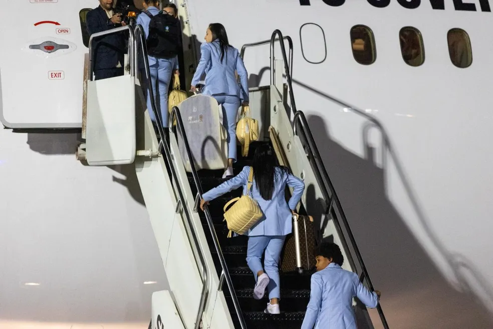
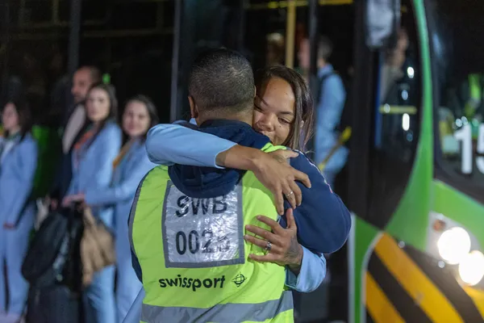

Seleção feminina embarca para a Copa do Mundo com preparação especial em busca do título inédito
Brasília - 03/07/2023 05h00
O sonho do título inédito da Copa do Mundo Feminina já está no ar. A seleção brasileira embarcou por volta de 5h20 desta segunda-feira para a Austrália, país que sediará junto com a Nova Zelândia o Mundial 2023, entre 20 de julho e 20 de agosto.
Em busca da "primeira estrela", o Brasil adotou uma logística especial para diminuir o impacto da diferença de 13 horas à frente em relação ao horário de Brasília. Pela primeira vez, a seleção viaja em voo fretado para uma Copa Feminina, o que permitiu à comissão técnica escolher o melhor horário de decolagem e trajeto até Gold Coast, no litoral Leste australiano, onde a seleção fará as duas primeiras semanas de treino no país da Copa.
- Estou feliz com a preparação. Temos uma longa viagem e precisamos nos adaptar o mais rapidamente possível ao jet leg (diferença de horário). Temos alguns exames e outras coisas para fazer para estarmos preparadas para o fuso horário da Austrália - disse a técnica Pia Sundhage no domingo, após a goleada por 4 a 0 sobre o Chile, em Brasília, no amistoso de despedida da torcida.
Minutos antes do embarque, já na pista do Aeroporto de Brasília, a atacante Nycole viveu uma emoção especial: ela pôde se despedir do pai, que trabalha no local como auxiliar de rampa.
– Fiquei muito feliz. Foi uma correria grande, eu entro no trabalho às 4h e ontem ela me ligou, dizendo que o voo provavelmente sairia às 5h30. Agora é torcer pra que elas façam um bom campeonato e tragam o caneco – disse Alessandro Sobrinho, pai da atacante da Seleção.
Serão 25 horas no avião, incluindo uma parada no Taiti para reabastecimento. Para adiantar a adaptação, a delegação mudou horários das refeições antes mesmo do voo. Um jantar foi servido para que toda a equipe comece a entrar no ritmo australiano.
Durante o voo, as jogadoras farão trabalhos específicos para facilitar à adaptação ao fuso horário e diminuir o desgaste. A chegada à Austrália está prevista para o início da noite de terça-feira (horário local).